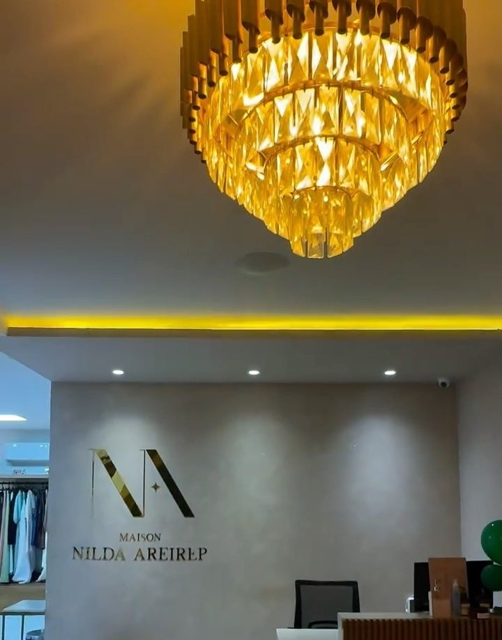
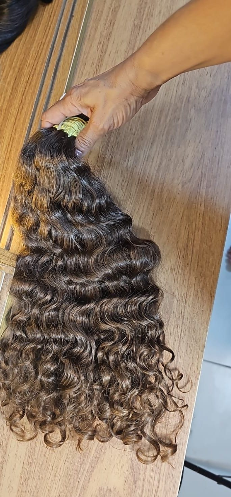
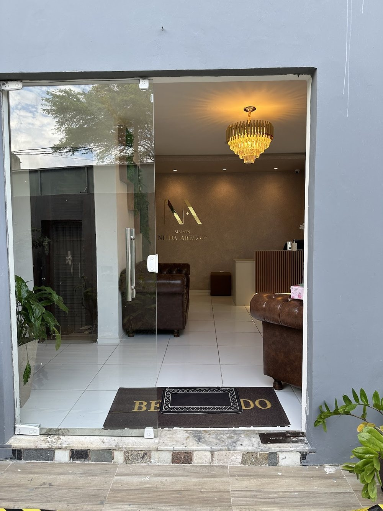
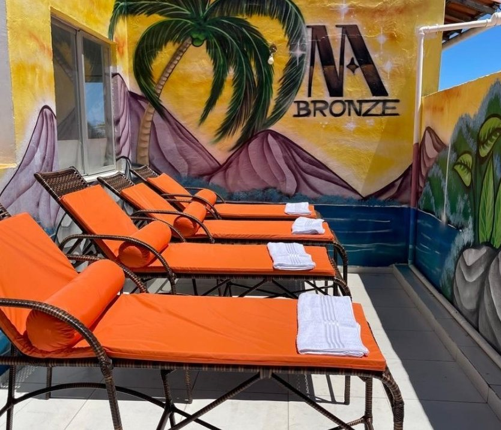

Salão de beleza · Piatã, Salvador
MaisonNilda Areirep
Extensão capilar, cabelo, unhas, cílios e bronze ao ar livre — com hora marcada.
Uma casa de beleza feminina na R. Eng. Erociano da Cruz Neves, em Piatã, à frente de Nilda Areirep. “+23 anos transformando autoestima”, diz a própria Maison. O carro-chefe é a extensão capilar, com avaliação dos fios antes de tudo.
4,9★★★★★86 avaliações no Google
Por onde começar
O que você veio cuidar?
Cada serviço tem uma página com o que é, como se preparar e os cuidados depois. Valor e duração, a recepção informa na hora de marcar.
Extensão capilar
Mega hair com avaliação dos fios, escolha das mechas e manutenção.
Ler a página Mãos e olharUnhas e cílios
Francesinha, alongamento e extensão de cílios volume brasileiro.
Ler a página Ao solBronze ao ar livre
O terraço M Bronze, com cuidado com o sol e hidratação.
Ler a página Primeira vezNunca fui à Maison
Endereço em Piatã, horário, mapa e como marcar pelo WhatsApp.
Como chegar
Extensão capilar, passo a passo
Do primeiro olhar à manutenção.
A extensão capilar é o serviço que a Maison cita em primeiro lugar na descrição da casa. Um roteiro geral do ofício, para ler antes — o que vale para o seu cabelo, confirme na avaliação.
- 01Avaliação dos fios
Antes de tudo, uma conversa e um olhar atento ao seu cabelo e ao couro cabeludo: comprimento, volume, química, sensibilidade. É aqui que se decide se — e como — a extensão faz sentido para você.
- 02Escolha das mechas
Cor, textura e comprimento são combinados com você, mecha por mecha, para conversar com o seu cabelo.
- 03Aplicação
Com hora marcada e sem pressa. A técnica e o tempo de cadeira são explicados antes de começar.
- 04Manutenção
A extensão acompanha o crescimento do cabelo: os retornos são combinados na própria avaliação.
Um dia na Maison
Da porta de vidro ao terraço.
“O salão é de fácil acesso e super aconchegante”, escreveu uma cliente. Um roteiro para quem vai pela primeira vez.
- IA porta de vidro
O tapete de “BEM-VINDO” na entrada, em Piatã, e a recepção logo à vista.
- IIA recepção
O lustre de cristal, o logotipo dourado na parede, os sofás de couro marrom.
- IIIUm cafezinho
“[…] até mesmo no cafezinho servido com todo capricho”, contou uma cliente no Google.
- IVO seu cuidado
Cabelo, extensão, unhas ou cílios, com hora marcada e explicação antes de começar.
- VO bronze ao sol
No terraço M Bronze, ao ar livre, com espreguiçadeiras, cuidado com o sol e hidratação.
A casa
Cristal, couro e dourado.
A entrada com o tapete de boas-vindas, a recepção sob o lustre, o terraço do bronze e as mechas na bancada. Fotos publicadas pela Maison no Google e no Instagram.


Quem está à frente
Nilda Areirep.
É como se apresenta Ivanilda Pereira dos Santos, sócia-administradora da Maison. As clientes a chamam de Nilda — “Nilda é uma profissional incrível, extremamente dedicada e competente”, escreveu uma delas no Google.
“Seja grato no pouco e siga buscando. Reclame menos e agradeça mais”Nilda Areirep, à Freesider (2020)
- 2020
Numa conversa publicada pela Freesider, Nilda Areirep, de Salvador, fala do “meu negócio na área da beleza” e conta que as inscrições do primeiro curso dela se esgotaram em seis dias.
- 18/04/2023
Abertura do CNPJ do Espaço Maison Nilda Areirep, na R. Eng. Erociano da Cruz Neves, em Piatã — ver o cadastro.
- Hoje
4,9 no Google com 86 avaliações e 12,5 mil seguidores no @nildaareirep.
- 09/11/2026
Convidada do Encontro de Gigantes da Anuar Cosméticos, no Auditório do CEO, em Salvador.
Na voz da casa
“Aqui vc será sempre bem vinda.”
A descrição da Maison e as respostas da Nilda às clientes no Google, copiadas como foram escritas (nomes de clientes retirados).
Descrição da Maison no Google“Bem-vindo à Maison Nilda Areirep […] ficamos localizados em Piatã. E oferecemos serviços estéticos de qualidade, como extensão capilar, unhas e cílios, micropigmentação e drenagem. Venha se sentir ainda mais linda conosco!”
Resposta a uma cliente“[…] são quase 6 anos uma sempre cheia de amor e cuidado com a outra, troca de cuidado profissional e cliente. 🥰🥰❤️”
Resposta a uma cliente“[…] obrigada por nos escolher pra cuida um pouquinho de você . Aqui vc será sempre bem vinda ❤️🥰”
Resposta a uma cliente“[…] é sempre um prazer ter vc como nossa cliente a muitos anos.”
Avaliações
4,9 no Google, com 86 avaliações.
Trechos curtos de avaliações públicas da ficha da Maison, sobre o atendimento e o espaço. Nomes abreviados.
Ambiente acolhedor e agradável. Nilda é uma profissional incrível, extremamente dedicada e competente.
Uma experiência maravilhosa do início ao fim! O salão é de fácil acesso e super aconchegante.
Ambiente acolhedor, você é bem tratada, qualidade dos serviços são de excelência, amo o local, as pessoas.
Cada visita é uma experiência incrível, com uma equipe atenciosa e talentosa que faz toda a diferença.
[…] até mesmo no cafezinho servido com todo capricho.
Endereço e horário
R. Eng. Erociano da Cruz Neves, 6A.
Em Piatã, Salvador. A porta de vidro com o lustre à vista. Veja como chegar.
Maison Nilda AreirepR. Eng. Erociano da Cruz Neves, 6A · Piatã · Salvador – BA · 41650-050
Atendimento com hora marcada
Horário da ficha da Maison no Google (lido em 18/10/2026). Atendimento com hora marcada — confirme com a recepção.
Dúvidas frequentes
Perguntas comuns
Como marcar um horário?
Pelo WhatsApp da Maison, (71) 98749-0659 — o mesmo número da ficha do Google e das artes da casa. Quem responde é a recepção.
Qual é o horário?
De terça a sábado, das 9h às 18h, segundo a ficha do Google. Domingo e segunda, fechado.
Onde fica?
Na R. Eng. Erociano da Cruz Neves, 6A, Piatã, Salvador (CEP 41650-050). Veja como chegar e o mapa.
Quais serviços a casa faz?
Extensão capilar (mega hair), cabelo, unhas, cílios, bronzeamento ao ar livre, micropigmentação e drenagem. Confirme com a equipe na hora de marcar.
O bronzeamento é em câmara?
Não. É ao ar livre, ao sol, no terraço M Bronze. Veja os cuidados antes de marcar.
Os preços estão no site?
Não. Valor e duração de cada serviço, a recepção informa na hora de marcar.
Agende
A Maison espera por você.
R. Eng. Erociano da Cruz Neves, 6A, Piatã. A recepção combina dia e horário pelo WhatsApp (71) 98749-0659, de terça a sábado, das 9h às 18h.